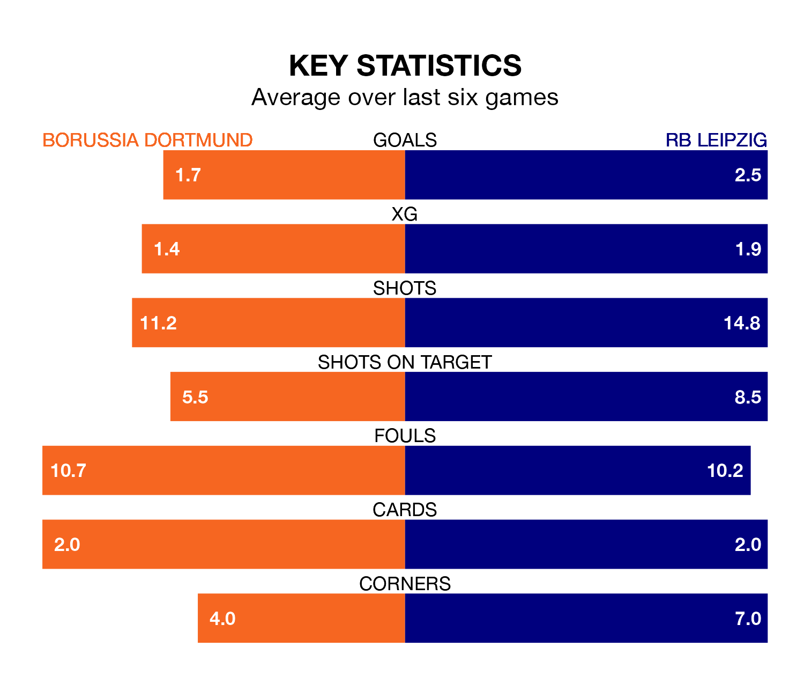

Borussia Dortmund host RB Leipzig on Saturday at SIGNAL IDUNA PARK in the Bundesliga.
In their last league match, on Sunday, Borussia Dortmund drew with Bayer Leverkusen 1-1 away, with their goal scored by Julian Ryerson.
RB Leipzig won, 2-1 at home against Heidenheim on December 2, with Lois Openda and Yussuf Poulsen on the scoresheet.
With Janis Blaswich between the sticks, RB Leipzig can rely on one of the league's safest pair of hands. He has kept five clean sheets in his 13 appearances this season, and no 'keeper has prevented the opposition scoring more often in the Bundesliga.
In Borussia Dortmund's net, Gregor Kobel has three clean sheets in 13 games. He has conceded a goal every 61 minutes, 50% more often than the 90 minutes between goals for Blaswich.
With 31 goals in 13 games so far this season, the away team are scoring more than average in the league with 2.4 goals per game. And they are conceding fewer than average, letting in 13 goals at a rate of 1.0 per game.
The hosts are also above average scorers, with 2.0 goals per game, compared to a league average of 1.7. They have conceded 1.5 goals per game.
RB Leipzig are fourth in the table after 13 games, of which they have won eight and drawn two, earning 26 points.
Borussia Dortmund are one place behind RB Leipzig in fifth, with seven wins and four draws putting them on 25 points.
In the last five years, Borussia Dortmund and RB Leipzig have played each other on 11 occasions. Borussia Dortmund won six of them, RB Leipzig four, and they drew once.
On average, Borussia Dortmund scored 1.8 goals and RB Leipzig 1.7 in those matches.
Their last meeting was on April 5, when RB Leipzig won 2-0 at home.
Borussia Dortmund are in mixed form in the Bundesliga, with two wins and two draws from their last six games.
With four wins and two losses over that period, the visitors' form is better – they have taken 12 points from 18, compared to the home side's eight.
